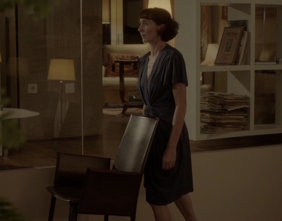

Siegmund Skalar

Siegmund Skalar * 1986 in Salzburg. Studium an der Akademie der Bildenden Künste Wien und an der Filmakademie Baden-Württemberg. Arbeitet mit Film und Fotografie. Er lebt und arbeitet in München.
Filme (Auswahl): Mending 2015 – Der Tunnel 2015 Flicker 2016 – Cinema: Me Myself and I 2016
Flicker
2016 – Video, Sound – 11'16''
R+B+S: Siegmund Skalar – K: Max Christmann – M: Nicolai
Krepart – Mit Esther Balfe, Alexander Morandini, Hannah Timbrell
Originaltexte + Foundfootage: Martha Graham, "On Performance" (1957)
Ein Szenario im Cinemascopeformat in der abendlichen Vorstadt verschiebt sich ins Surreale: Drei Charaktere sind scheinbar in dysfunktionalen und repetitiven Handlungsmustern gefangen. Eine Stimme aus dem Off kommentiert das Geschehen und wirft Fragen zur Natur und Kunst / Künstlichkeit von Performances auf.